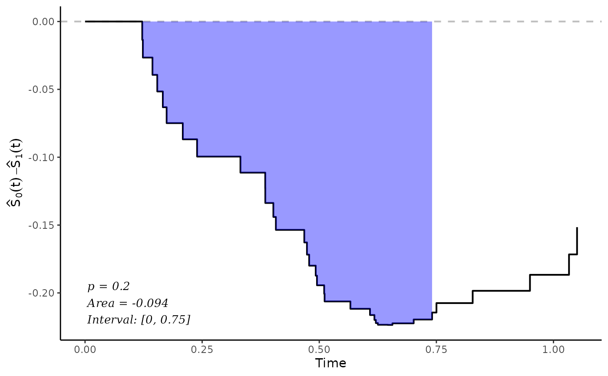

Plot the Difference Between or the Ratio of Two Adjusted Survival Curves or CIFs
plot_curve_diff.RdA function to graphically display the difference or ratio between two confounder-adjusted survival curves which where previously estimated using the adjustedsurv function or between two confounder-adjusted CIFs which where previously estimated using the adjustedcif function. The user can customize the plot using a variety of options. Internally it uses the ggplot2 package, so additional not implemented features can be added using the standard ggplot2 syntax.
Usage
plot_curve_diff(x, group_1=NULL, group_2=NULL,
conf_int=FALSE, conf_level=0.95, type="steps",
times=NULL, max_t=Inf, use_boot=FALSE,
size=0.7, color="black", linetype="solid",
alpha=1, conf_int_alpha=0.4,
points_ci_size=NULL, points_ci_width=NULL,
xlab="Time", ylab=NULL, title=NULL,
subtitle=NULL, gg_theme=ggplot2::theme_classic(),
line_at_ref=TRUE, line_at_ref_size=0.7,
line_at_ref_color="grey", line_at_ref_linetype="dashed",
line_at_ref_alpha=1,
loess_smoother=FALSE, loess_span=0.75,
loess_color=color, loess_size=size,
loess_linetype="dashed", loess_alpha=alpha,
test=NULL, integral_from=0, integral_to=NULL,
p_value=FALSE, integral=FALSE,
interval=FALSE, text_pos_x="left",
text_pos_y="bottom", text_size=3.5,
text_family="serif", text_fontface="italic",
text_color="black", text_alpha=1,
text_digits=3, text_format_p=TRUE,
fill_area=FALSE, area_color="blue", area_alpha=0.4,
fill_only_interval=TRUE,
...)
plot_curve_ratio(x, group_1=NULL, group_2=NULL, conf_int=FALSE,
conf_level=0.95, type="steps", times=NULL,
max_t=Inf, use_boot=FALSE, size=0.7, color="black",
linetype="solid", alpha=1,
conf_int_alpha=0.4, xlab="Time", ylab=NULL,
title=NULL, subtitle=NULL,
gg_theme=ggplot2::theme_classic(),
line_at_ref=TRUE, line_at_ref_size=0.7,
line_at_ref_color="grey",
line_at_ref_linetype="dashed",
line_at_ref_alpha=1, ...)Arguments
- x
An
adjustedsurvobject created using theadjustedsurvfunction or anadjustedcifobject created using theadjustedciffunction.- group_1
A single character string specifying one of the levels of the
variableused in the originaladjustedsurvoradjustedciffunction call. This group will be subtracted from. For example ifgroup_1="A"andgroup_2="B"the plotted curve will correspond to the survival probability (or CIF) ofAminus the survival probability (or CIF) ofBover time. IfNULL, this will default to the first level ofvariable. Similarly if one plots ratios instead, the ratio would be calculated asA / B.- group_2
Also a single character string specifying one of the levels of
variable. This corresponds to the right side of the difference equation. See argumentgroup_2. IfNULL, this will default to the second level ofvariable.- conf_int
A logical variable indicating whether the confidence intervals should be drawn. This only works when
conf_int=TRUEorbootstrap=TRUEwas used in the originaladjustedsurvoradjustedciffunction call.- conf_level
The confidence level that should be used when calculating the confidence intervals. Ignored if
conf_int=FALSE.- type
Must be one of
"steps"(drawing the difference/ratio as a step function),"lines"(drawing the difference/ratio using linear interpolation),"points"(drawing points only) or"none"(drawing nothing, useful when only the smoothed difference is of interest). It defaults to"steps". For ratios, only the"steps"and"lines"options are available.- times
An optional numeric vector of points in time at which the difference or ratio should be estimated. If
NULL(default) the differences / ratios are estimated for the whole curve. This only affects the plot and has no effect on theintegralorp_valueif those are also specified.- max_t
A number indicating the latest time to which the curve should be extended to.
- use_boot
Whether to use the bootstrapped estimates to calculate the confidence intervals or not. Can only be used if
bootstrap=TRUEwas used in the originaladjustedsurvoradjustedciffunction call. Ignored ifconf_int=FALSE.- size
A number controlling the thickness of the curve.
- color
A string specifying the color of the curve.
- linetype
A string specifying the linetype of the curve.
- alpha
A number controlling the transparency level of the curves.
- conf_int_alpha
A number indicating the level of transparency that should be used when drawing the confidence regions.
- points_ci_size
Only used when
type="points". Controls the size of the error bars.- points_ci_width
Only used when
type="points". Controls the width of the error bars.- xlab
A character string to be used as the X-Axis label of the plot. Defaults to "Time".
- ylab
A character string to be used as the Y-Axis label of the plot. By default (
NULL) uses the equation used to calculate the differences / ratios, based on the names supplied ingroup_1andgroup_2.- title
A character string to be used as the title of the plot. Set to
NULLif no title should be used.- subtitle
A character string to be used as the subtitle of the plot. Set to
NULLif no subtitle should be used.- gg_theme
A
ggplot2theme object which will be used for the plot.- line_at_ref
Whether to draw a horizontal line at y = 0 for differences or at y = 1 for ratios or not.
- line_at_ref_size
The size of the line drawn at the reference value. Ignored if
line_at_ref=FALSE.- line_at_ref_color
The color of the line drawn at the reference value. Ignored if
line_at_ref=FALSE.- line_at_ref_linetype
The linetype of the line drawn at the reference value. Ignored if
line_at_ref=FALSE.- line_at_ref_alpha
The transparency level of the line drawn at the reference value. Ignored if
line_at_ref=FALSE.- loess_smoother
Whether to draw a LOESS smoother through the difference curves.
- loess_span
The span of the LOESS smoother. Ignored if
loess_smoother=FALSE. Seestat_smoothin theggplot2package,method="loess"for more details.- loess_color
The color of the LOESS smoother line. Ignored if
loess_smoother=FALSE.- loess_size
The size of the LOESS smoother line. Ignored if
loess_smoother=FALSE.- loess_linetype
The linetype of the LOESS smoother line. Ignored if
loess_smoother=FALSE.- loess_alpha
The transparency level of the LOESS smoother line. Ignored if
loess_smoother=FALSE.- test
An optional
curve_testobject created using theadjusted_curve_testfunction. If supplied it can be used to add a p-value and the integral statistic to the plot. Alternatively, the needed arguments below can be specified to obtain the values needed for the test. See below. Set toNULL(default) to ignore this.- integral_from
A number specifying the left limit of the integral. When
p_value=TRUEandtest=NULL, this argument will be passed to thefromargument in theadjusted_curve_testfunction to perform the test.- integral_to
A number specifying the right limit of the integral. When
p_value=TRUEandtest=NULL, this argument will be passed to thetoargument in theadjusted_curve_testfunction to perform the test.- p_value
Whether to add a p-value to the plot or not. This requires either that the user supplies a previously created
curve_testobject to thetestargument, or that the required arguments to call this function are supplied (at leastintegral_to). Either way it only works ifbootstrap=TRUEwas used in the originaladjustedsurvoradjustedciffunction call.- integral
Whether to add the integral of the difference in the interval [
from,to] to the plot or not. This requires either that the user supplies a previously createdcurve_testobject to thetestargument, or that the required arguments to call this function are supplied (at leastintegral_to).- interval
Whether to add the interval in which the integral was calculated to the plot as well.
- text_pos_x
X position of the text. Can be either
"left"(default),"middle","right"or a number specifying the exact position.- text_pos_y
Y position of the text. Can be either
"bottom"(default),"middle","top"or a number specifying the exact position.- text_digits
The number of digits to which the p-value and the integral of the difference should be rounded to.
- text_size
The size of the text.
- text_family
The family of the text. Defaults to
"serif".- text_fontface
The fontface of the text. Defaults to
"italic".- text_color
The color of the text. Defaults to
"black".- text_alpha
The transparency level of the text.
- text_format_p
Whether to format p-values smaller than 0.01 to < 0.01.
- fill_area
Whether to add color to the area between 0 and the difference.
- area_color
The color used to fill in the area between 0 and the difference when using
fill_area=TRUE. Ignored otherwise.- area_alpha
The transparency level used to fill in the area between 0 and the difference when using
fill_area=TRUE. Ignored otherwise.- fill_only_interval
Whether only the area corresponding to the interval defined by
integral_fromandintegral_toshould be filled. Only used whenfill_area=TRUE.- ...
Currently not used.
Details
This function allows the easy creation of difference / ratio curves. The syntax is exactly the same for both adjusted survival curves and adjusted CIFs. Similarly, the syntax is the same for ratios and for difference curves, although not all options of the difference curve function are available for the ratio curve function. By default it calculates the estimates up to the last point where estimates for both the group_1 curve and the group_2 curve are available.
It currently does not support plotting multiple curves at once, which could be useful when there are more than two treatment groups in variable. If the user is interested in this, we recommend calling this function multiple times with the desired comparisons and concatenating the individual plots into one plot afterwards using a suitable function such as par or ggarrange.
More information on how the differences or ratios and their confidence intervals are calculated can be found in the documentation of the adjusted_curve_diff function. More information on how the overall p-value and the integral are calculated for differences can be found in the adjusted_curve_test function.
References
Michael Coory, Karen E. Lamb, and Michael Sorich (2014). "Risk-Difference Curves can be used to Communicate Time-Dependent Effects of Adjuvant Therapies for Early Stage Cancer". In: Journal of Clinical Epidemiology 67, pp. 966-972
Lihui Zhao, Lu Tian, Hajime Uno, Scott D. Solomon, Marc A. Pfeffer, Jerald S. Schindler, and L. J. Wei (2012). "Utilizing the Integrated Difference of Two Survival Functions to Quantify the Treatment Contrast for Designing, Monitoring and Analyzing a Comparative Clinical Study". In: Clinical Trials 9.5, pp. 570-577
Examples
library(adjustedCurves)
library(survival)
if (requireNamespace("ggplot2") & requireNamespace("riskRegression")) {
library(ggplot2)
set.seed(42)
# simulate some data as example
sim_dat <- sim_confounded_surv(n=50, max_t=1.2)
sim_dat$group <- as.factor(sim_dat$group)
# estimate a cox-regression for the outcome
cox_mod <- coxph(Surv(time, event) ~ x1 + x2 + x3 + x4 + x5 + x6 + group,
data=sim_dat, x=TRUE)
# use it to calculate adjusted survival curves with bootstrapping
adjsurv <- adjustedsurv(data=sim_dat,
variable="group",
ev_time="time",
event="event",
method="direct",
outcome_model=cox_mod,
conf_int=TRUE,
bootstrap=TRUE,
n_boot=15) # should be much bigger in reality
# plot the difference with default values
plot_curve_diff(adjsurv)
# plot the ratio with default values
plot_curve_ratio(adjsurv)
# plot with reversed differences
plot_curve_diff(adjsurv, group_1="1", group_2="0")
# plot with confidence intervals
plot_curve_diff(adjsurv, conf_int=TRUE)
plot_curve_ratio(adjsurv, conf_int=TRUE)
# plot using lines instead
plot_curve_diff(adjsurv, conf_int=TRUE, type="lines")
# plot using points instead
plot_curve_diff(adjsurv, conf_int=TRUE, type="points")
# plot using an additional loess smoother
plot_curve_diff(adjsurv, loess_smoother=TRUE)
# plot without the line at reference
plot_curve_diff(adjsurv, line_at_ref=FALSE)
plot_curve_ratio(adjsurv, line_at_ref=FALSE)
# plot with some custom parameters
plot_curve_diff(adjsurv, conf_int=TRUE, color="blue", linetype="dotted",
alpha=0.8, line_at_ref_size=1.1, line_at_ref_color="red",
loess_smoother=TRUE, loess_span=0.55)
# adding a p-value for a difference test in the interval [0, 0.75]
plot_curve_diff(adjsurv, conf_int=TRUE, p_value=TRUE, integral_from=0,
integral_to=0.75, integral=TRUE)
# adding a p-value for a difference test in the interval [0, 0.75],
# and also showing that integral visually in the plot
plot_curve_diff(adjsurv, conf_int=FALSE, p_value=TRUE, integral_from=0,
integral_to=0.75, integral=TRUE, fill_area=TRUE,
interval=TRUE)
}
#> Loading required namespace: ggpp
#> Registered S3 methods overwritten by 'ggpp':
#> method from
#> heightDetails.titleGrob ggplot2
#> widthDetails.titleGrob ggplot2
